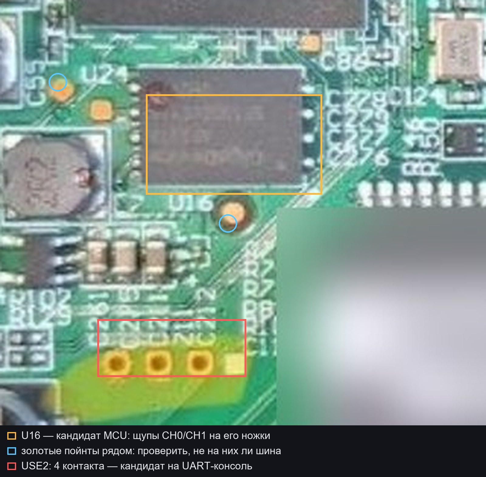

Сниффинг шины SoC ↔ MCU
Отдельная страница про путь 1: снять ключ с платы, не выпаивая флеш.
Зачем
Файловая система на флеше зашифрована: из 342 блоков 324 помечены magic 38 26 90 05. Ключ не лежит в прошивке пакета — по данным доклада WHY2025 его выводит микроконтроллер: процессор отправляет значение, MCU возвращает результат, из ответов собирается ключ. Шина между ними нешифрованная, значит её можно слушать.
Что это даёт: штатный том расшифровывается, и мы правим файлы, не трогая загрузчик.
Что нужно
| Предмет | Зачем | Заметка |
|---|---|---|
| Логический анализатор, 8 каналов | слушать линии | 24 МГц хватает для UART; 100 МГц — запас |
| Щупы с тонкими иглами | цепляться к ножкам QFN | без пайки, прижимом |
| Мультиметр | земля, питание, прозвонка | режим прозвонки и вольтметр |
| USB-UART переходник | консоль, если найдётся UART | 3,3 В, не 5 В |
| Макро-съёмка 10× | прочитать маркировку U16 | телефон с макро или лупа |
Где точки

| Точка | Что это | Уверенность |
|---|---|---|
| U16 рядом с процессором | кандидат в MCU, который выводит ключ | [гипотеза] маркировка не читается |
| Золотые площадки рядом с U16 | возможно, выведенные линии шины | [гипотеза] |
| 4 контакта у U16 (3 круглых + 1 квадратный) | кандидат на UART-консоль | [гипотеза] |
Порядок
- Общий провод. GND анализатора — на землю платы: экран разъёма или полигон у питания. Без общей земли сигнал бессмысленный.
- Маркировка U16. Макро-снимок при 10×; по номеру найти даташит, в нём VDD, GND и выводы UART/SPI.
- Прозвонка. Плата обесточена, мультиметр в режиме диодов: линия, которая звонится и на U16, и на процессор, — кандидат в шину.
- Подключение. CH0 и CH1 на две найденные линии, порог 1,65 В, частота 24–100 МГц, запуск по включению питания.
- Запись. Включить трубку и снять лог первых секунд загрузки.
- Разбор. UART — байты видны сразу; SPI или I2C — сначала декодировать по CLK.
Как понять, что получилось
- В логе виден повторяющийся обмен: запрос от процессора и ответ MCU.
- По докладу ответы склеиваются в ключ; длина ключа — 32 байта под AES-256.
- Проверка ключа офлайн — есть на чём уже сейчас. В пакете
86.14.4лежит тот же том: UBI, 342 блока, из них 324 с magic38 26 90 05. Кандидат ключа проверяем на нём, не трогая трубку: расшифровать первый блок и поискать сигнатуру узла UBIFS (31 18 10 06). - [гипотеза] Если на пакете ключ не подошёл — значит ключ уникален для конкретного устройства, и тогда нужен хотя бы один зашифрованный блок с флеша: UART, maskrom или выпайка. То есть сниффинг сам по себе даёт ключ, но подтверждает его либо пакет, либо один блок с платы.
Что не делать
- Не подавать 5 В: на плате 3,3 В.
- Не замыкать иглой соседние ножки QFN — можно уронить питание и получить кирпич.
- Не паять до проверки распиновки: достаточно прижать иглу к площадке.
Если трафик не находится
- Перебрать площадки рядом с U16 анализатором: линия с активностью при загрузке — кандидат.
- Проверить, не идёт ли обмен между процессором и другим чипом: возможно, MCU стоит не U16.
- Вернуться к пути 2 — свой загрузчик: USB и maskrom.
[гипотеза] Всё выше — методика, а не подтверждённая распиновка. Точные точки определяются за 15–20 минут с мультиметром и макро-снимком.
Связанное: Что чем решается · Как делали другие · USB и maskrom.